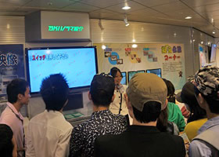
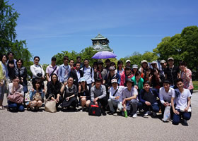
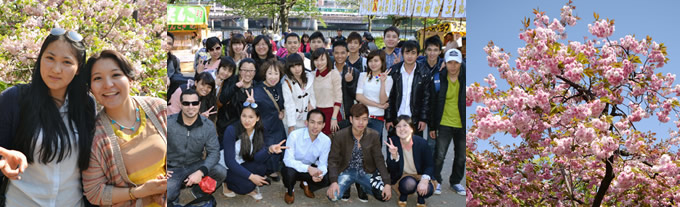
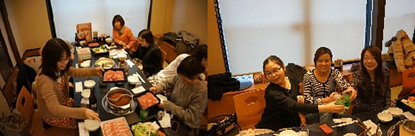
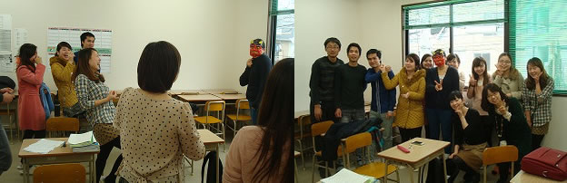
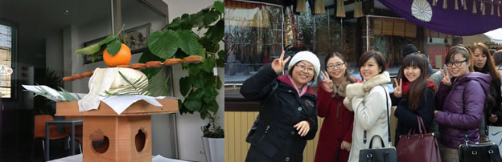
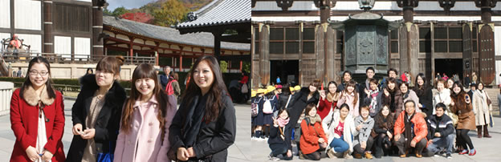
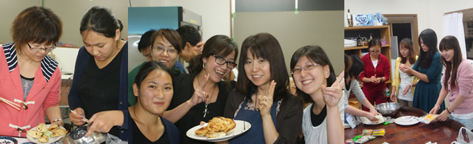

We have prepared a program for all the overseas students to experience the Japanese culture.
NHK TV Broadcasting Station Visit (17th May 2013)
|  |
We have visited the main place for Japanese public broadcasting station called NHK(Nihon Housou Kyokai ), and observed Japanese TV show set and its making.. NHK is a public broadcasting station that can be viewed from any part of Japan. As a public broadcasting station, the size of its business is comparable to that of British Broadcasting Corporation (BBC).
|
Osaka Castle (17th May 2013)
|  |
We have visited a castle built by the Hideyoshi Toyotomi. Osaka Castle is a landmark of Osaka, which is one of the 3 well known castle; Himeji and Kumamoto Castle. |
Ohanami (7th May 2013)
|  |
 |
| Ohanami is a traditional Japanese custom of enjoying the cherry blossom during the spring time. It is said that Hanami started 1,300 years from now during Nara Period, originated from events taken by the nobles. Just like the weather cast, Cherry blossom forecast is shown on the TV during the spring time. We enjoyed our lunch under the cherry blossom trees. |
Shabu Shabu (27th March 2013)
|  |
|
| Shabu Shabu is one of the worldly famous Japanese cuisines. You place sliced beef into the boiled water, dip inside the soup stock to eat. We went to eat with our students. |
Mame Maki (2nd March 2013)
|  |
|
| It is said that spring starts from second of march in Japan. (It is actually very cold). We have the special ceremony to cleans away all the evil of the former year by 「throwing beans」. Osaka Japanese Language Academy has thrown beans, praying for the safety and health of our students. |
Hatsumoude (2nd of January 2013)
|  |
|
Hatsumode is the first Shinto shrine visit of the Japanese new year. Osaka Japanese Language Academy has visited Sumiyoshi Grand Shrine with our students on second of January for the Hatsumode.
|
Visit to Nara (23rd November 2012)
|  |
|
| We have visited Nara with our students. Nara is older city than Kyoto, which said to be the first region where Japan was born. There are many historical buildings, and the Houryuji Temple is actually the oldest wooden building in the world. |
Lets Eat International Food (26th October 2012)
|  |
|
| We asked each student to cook their own national food, and had a food festival. There are large hall and the kitchen in Osaka Japanese Language Academy, that are used by many people to cook and have a party simultaneously. |
（Ｃ）2013 OSAKA JAPANESE LANGUAGE ACADEMY. All Rights Reserved.